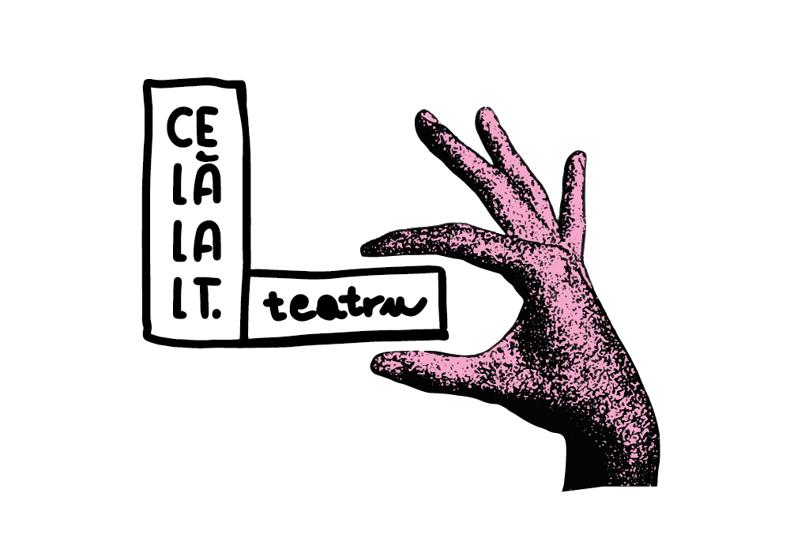

Bine ai venit!
Ne revedem
în octombrie!
teatru independent / spațiu de arte performative
Copyright 2025
teatru independent / spațiu de arte performative
Teatrul este un loc de întâlnire cu celălalt – fie că e actorul aflat la doar câțiva pași, personajul care ne seamănă, povestea care ne pune oglinda în față, sau copilul nostru interior. Într-un spațiu mic, dar plin de suflet, ne întâlnim cu publicul pentru a crea împreună spectacole de teatru experimental, alternativ și contemporan.
Credem în puterea teatrului de a vorbi despre prezent, de a oferi publicului tânăr repere și celui matur ferestre către visare și reflecție.
Intimitatea scenei apropie oamenii, șterge granițele dintre public și artiști și transformă fiecare spectacol într-o experiență vie, irepetabilă, în care descoperim împreună ce înseamnă să fii celălalt și, totodată, să fii tu însuți.